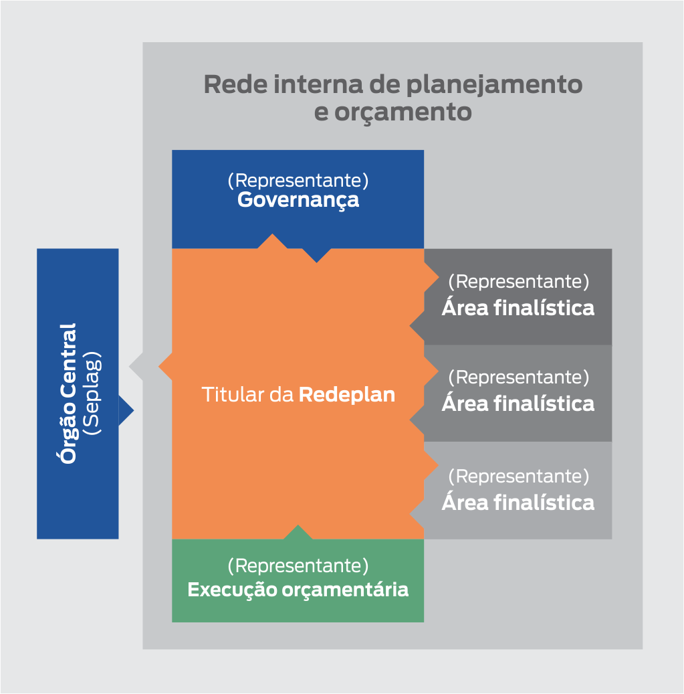

Nos órgãos setoriais, os integrantes da Redeplan são responsáveis por conduzir junto às redes internas de planejamento de suas Secretarias ou entidades os processos de planejamento coordenados pela Seplag, em particular os relativos à elaboração, monitoramento, avaliação e revisão do PPA. Eles fazem a ponte entre o órgão central e a rede interna, composta por representantes da governança, das áreas finalísticas e da área responsável pela execução orçamentária.
Dois servidores - titular e suplente - devem ser indicados formalmente para a Redeplan.
Nas Secretarias de Estado, os titulares da Redeplan são os Assessores Setoriais de Planejamento e Orçamento
(Asplos). Em órgãos setoriais que fazem parte da Administração Indireta, a criação dessas assessorias é
facultativa.
As Asplos são ligadas ao secretário de estado (ou cargo correlato em entidades), podendo ser delegadas a uma
estrutura que faça parte da governança do órgão, como a Chefia de Gabinete, Subsecretaria Executiva ou
Subsecretaria Geral.
Os titulares das Asplos devem ser, preferencialmente, servidores da carreira de Especialista em Políticas Públicas
e Gestão Governamental, Planejamento e Orçamento (EPPGGPO). Caso o profissional indicado não pertença à carreira
de EPPGGPO, deverá ter perfil de articulação, formação de nível superior e experiência em atividades compatíveis
com as que serão exercidas, com comprovação encaminhada ao setor de recursos humanos do órgão a que estiver
vinculado.
Nos órgãos setoriais onde não houver Asplo, o ideal é que o titular da Redeplan seja lotado na governança do
órgão. Essa localização na estrutura permite que o integrante setorial da Redeplan - que tem como principal função
a articulação - tenha acesso facilitado à governança, a todas as áreas finalísticas responsáveis pelas iniciativas
e à área responsável pela execução orçamentária.
Embora não respondam formalmente por seus órgãos, membros das equipes responsáveis pelos processos de planejamento
também podem integrar a Redeplan e são muito bem-vindos em capacitações, seminários e demais eventos da rede, além
de estarem sempre convidados a trocar experiências e sugerir o aperfeiçoamento de processos de
planejamento.
Para saber mais, veja o Decreto nº 48.413/2023, que
cria as Assessorias Setoriais de Planejamento e Orçamento
(ASPLOs) e reestrutura o Sistema de Planejamento e Orçamento (SPO).